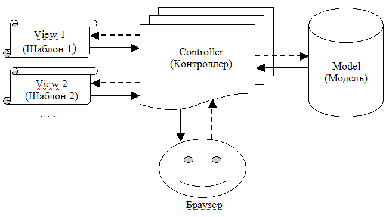

##Order = 0
##Text
Прежде, чем продолжить, дадим краткую расшифровку терминов Model, View и Con-troller, составляющих название подхода.
- Model означает "Модель", т.е. предметную область системы, ее "содержание". Обычно модель включает в себя такие элементы, как база данных системы, а так-же код, непосредственно с ней работающий.
- View - это "Шаблон", применяемый при формировании окончательного вида страницы, т.е. ее представление. Конечно, у каждой страницы может иметься не-сколько альтернативных шаблонов.
- Controller - "Контроллер", код бизнес-логики, занимающийся приемом данных от пользователя, а также выступающий посредником между Моделью и Шабло-ном.
